Arquitectura de Computadoras
Julio César Bernal Martínez
Ingeniería en Sistemas Computacionales
Proyecto Final
Arquitectura de computadoras
Julio César Bernal Martínez
Índice
Unidad 1: Arquitecturas de cómputo
- 1.1 Modelos de arquitecturas de cómputo
- 1.2 Análisis de los componentes
- 1.3 Memoria principal
- 1.4 Módulos de Entrada - Salida
- 1.5 Acceso directo a memoria
- 1.6 Buses
- 1.7 Interrupciones
Unidad 2: Estructura y funcionamiento del procesador
- 2.1 Organización del procesador
- 2.2 Estructura de registros
- 2.3 Ciclo de la instrucción
- 2.4 Modos de direccionamiento
- 2.5 Casos de estudio
Unidad 3: Selección de componentes para ensamble de equipo de cómputo
- 3.1 Chipset
- 3.2 Aplicaciones
- 3.3 Ambientes de servicio
Unidad 4: Procesamiento paralelo
- 4.1 Aspectos básicos de la computación paralela
- 4.2 Tipos de computación paralela
- 4.3 Sistemas de memoria compartida
- 4.4 Sistemas de memoria distribuida
- 4.5 Casos de estudio
PDF´S
Introducción
La arquitectura de computadoras es una rama fundamental de la informática y de la ingeniería en sistemas computacionales, ya que estudia la estructura, organización y funcionamiento interno de los sistemas de cómputo. Gracias a esta área es posible comprender cómo interactúan los diferentes componentes de hardware y software para procesar información, ejecutar instrucciones y realizar múltiples tareas de manera eficiente.
A lo largo del tiempo, la arquitectura de computadoras ha evolucionado constantemente para satisfacer las necesidades de velocidad, capacidad de procesamiento y almacenamiento que demandan las tecnologías actuales. Esto ha permitido el desarrollo de procesadores más rápidos, sistemas multiprocesador, memorias más eficientes y técnicas avanzadas de procesamiento paralelo.
En este proyecto se presentan los principales temas relacionados con la arquitectura de computadoras, incluyendo los modelos de arquitecturas de cómputo, la estructura y funcionamiento del procesador, la selección de componentes para el ensamble de equipos y los fundamentos del procesamiento paralelo. Además, se analizan conceptos importantes como memoria, buses, interrupciones, registros y sistemas de entrada y salida.
El objetivo de este trabajo es comprender el funcionamiento interno de los sistemas computacionales y reconocer la importancia de cada uno de sus componentes en el desempeño general de una computadora. De esta manera, se fortalecen los conocimientos necesarios para el desarrollo profesional dentro del área de tecnologías de la información.
UNIDAD 1
Arquitecturas de computo
1.1: Modelos de arquitecturas de cómputo
La arquitectura de computadoras es el plano conceptual y la estructura operativa fundamental de un sistema digital. No solo define los componentes físicos, sino también el modelo de ejecución de instrucciones y la organización de los flujos de datos a nivel de transferencia de registros. Se encarga de establecer cómo la CPU, la memoria y los dispositivos de entrada y salida trabajan y se comunican para procesar información, ejecutar instrucciones y almacenar datos. Con el paso del tiempo se han desarrollado distintos modelos de arquitectura de cómputo para mejorar el rendimiento y la capacidad de procesamiento, entre los que destacan las arquitecturas clásicas, segmentadas y de multiprocesamiento.
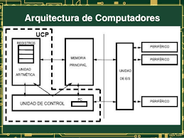
Clásicas
Von Neumann
Fue propuesto por el matemático John Von Neumann en la década de 1940 para el proyecto EDVAC. Es una de las arquitecturas fundamentales en el campo, introduciendo el revolucionario concepto de "programa almacenado" (antes las computadoras debían ser recableadas físicamente para cambiar de tarea). Se basa en la idea de tener una unidad central de procesamiento (CPU) que accede a una memoria compartida unificada para almacenar tanto datos como programas. Las instrucciones y datos se guardan en la misma memoria y se recuperan a través de un bus común. Esto genera el fenómeno conocido como el "cuello de botella de Von Neumann": dado que comparten el mismo canal físico, la CPU no puede leer una instrucción y escribir/leer un dato al mismo tiempo, limitando el rendimiento máximo.
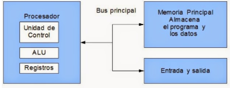
Harvard
La arquitectura Harvard fue desarrollada en la Universidad de Harvard durante la década de 1940, siendo utilizada en la computadora Harvard Mark I. Este modelo se basa en el uso de memorias y buses separados para almacenar datos e instrucciones, permitiendo que ambos puedan ser accedidos al mismo tiempo por la CPU. Gracias a esta separación física, se elimina el cuello de botella, mejorando la velocidad y eficiencia en el procesamiento de la información. Actualmente, esta arquitectura pura es utilizada principalmente en microcontroladores, sistemas embebidos y dispositivos electrónicos de procesamiento rápido. Cabe destacar que las CPUs modernas usan una arquitectura Harvard modificada, dividiendo la memoria Caché L1 en instrucciones y datos, pero unificando la memoria RAM principal.
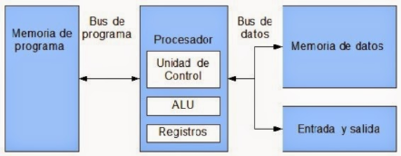
Segmentadas (Pipeline)
Las arquitecturas segmentadas buscan mejorar el rendimiento del procesador aplicando paralelismo a nivel de instrucción. En lugar de esperar a que una instrucción complete todo su ciclo, el procesador se divide en diferentes unidades funcionales independientes (Fetch, Decode, Execute, etc.) que trabajan de manera simultánea. Este modelo funciona exactamente como una línea de ensamblaje industrial, donde varias instrucciones avanzan al mismo tiempo por distintas etapas del proceso. Aunque el tiempo total que tarda una sola instrucción en completarse no disminuye, la cantidad de instrucciones terminadas por unidad de tiempo aumenta drásticamente, logrando idealmente completar una instrucción por cada ciclo de reloj.
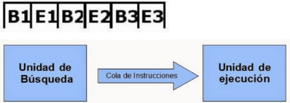
Multiprocesamiento
La arquitectura de multiprocesamiento es un modelo de cómputo que utiliza dos o más procesadores (núcleos) trabajando al mismo tiempo dentro de un mismo sistema. Surge cuando los límites físicos y térmicos impiden aumentar la frecuencia de reloj de un solo núcleo. En este tipo de arquitectura, varios procesadores colaboran para ejecutar tareas de manera simultánea, compartiendo recursos como la memoria y los dispositivos de entrada y salida. Dependiendo de su acceso a la memoria, se clasifican en SMP (Symmetric Multiprocessing), donde todos comparten un acceso equilibrado a una única RAM común a través de un bus del sistema central, y NUMA (Non-Uniform Memory Access), utilizado en servidores, donde cada procesador tiene su propio banco de memoria local rápido pero puede conectarse a otros mediante interconexiones de alta velocidad.
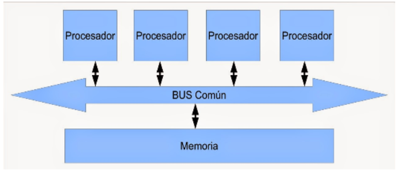
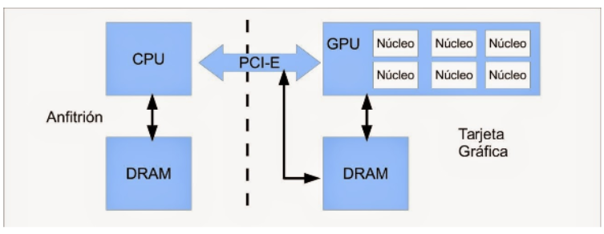
1.2: Análisis de los componentes
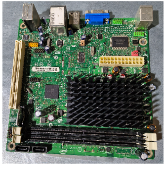
¿Qué son los componentes de una computadora?
Los componentes de una computadora son los elementos físicos (hardware) esenciales que, al trabajar en conjunto, permiten su funcionamiento. Estos pueden clasificarse en componentes internos (aquellos instalados dentro del gabinete que conforman el núcleo del sistema) y componentes externos o periféricos (dispositivos de interacción que se conectan al sistema desde el exterior).
CPU: El procesador es un circuito electrónico complejo que actúa como el cerebro lógico y aritmético de la computadora. Se encarga de llevar a cabo los miles de millones de cálculos por segundo que sostienen el sistema operativo y el software entero a través de sus vastas redes de circuitos. Un microprocesador moderno regula y coordina simultáneamente todas las funciones del equipo.
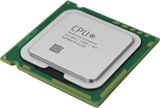
Motherboard: Serie de circuitos integrados impresos en una misma plataforma de silicio que hacen de núcleo conector del sistema. Integra de forma física y electrónica a todos los demás componentes. Contiene elementos clave como los sockets, los buses integrados y el Firmware (BIOS/UEFI), que es el software preprogramado de fábrica indispensable para el arranque básico.
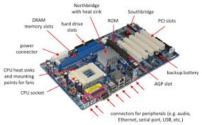
Fuente de poder: El corazón energético del sistema. Se encarga de transformar y suministrar la energía eléctrica alterna de la red comercial regulándola a corriente directa en los voltajes adecuados para la Placa Base y el resto de los componentes. Mantiene activos ciertos sistemas indispensables y de protección eléctrica incluso cuando el computador se encuentra apagado.
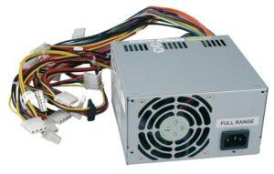
RAM: Su nombre proviene de las siglas de Random Access Memory o Memoria de Acceso Aleatorio. Son una serie de módulos de alta velocidad conectados a la placa madre donde van los programas a ejecutarse, tanto los hilos del sistema operativo como las aplicaciones activadas por el usuario. Es un almacenamiento de trabajo directo para la CPU y es completamente volátil; todo lo que contiene se borrará al apagar o reiniciar el equipo.
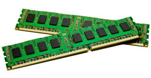
Almacenamiento: Se trata de los dispositivos físicos encargados de resguardar la información de manera permanente y no volátil en el sistema informático. Contiene todo el software estructural, desde el propio Sistema Operativo, hasta los archivos personales, bases de datos y aplicaciones instaladas, utilizando tecnologías magnéticas (HDD) o chips semiconductores flash de alta velocidad (SSD).
GPU: La Unidad de Procesamiento Gráfico es un procesador copartícipe especializado de forma exclusiva en el cálculo matricial y procesamiento de información referente a video, aceleración 3D y renderizado de imágenes en movimiento. Emite las señales necesarias hacia pantallas o proyectores y libera a la CPU principal de grandes cargas de trabajo matemático visual.

1.2.1: Arquitecturas de Instrucciones (ISA)
Arquitectura RISC (Reduced Instruction Set Computer)
Es un enfoque de diseño de procesadores que se caracteriza por utilizar un conjunto de instrucciones reducido, de tamaño fijo y altamente optimizado. Los procesadores RISC ejecutan la gran mayoría de sus instrucciones en un solo ciclo de reloj, lo que los hace extremadamente eficientes en operaciones simples. Al simplificar el hardware se requieren menos transistores, reduciendo el consumo energético y el calor, trasladando la complejidad al compilador de software. Es la base de la arquitectura ARM usada en procesadores móviles modernos y servidores de alta eficiencia.
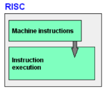
Arquitectura CISC (Complex Instruction Set Computer)
A diferencia de RISC, los procesadores CISC utilizan un repertorio de instrucciones muy amplio, diverso y de tamaño variable. Estas instrucciones robustas son capaces de realizar tareas complejas en un solo ciclo de instrucción a nivel de software (como interactuar con la memoria y hacer operaciones aritméticas simultáneamente). Esto requiere un circuito de hardware interno muy complejo dotado de microcódigo para interpretar las macroinstrucciones. Es la base tradicional x86 utilizada por Intel y AMD en ordenadores personales.
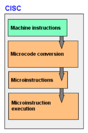
1.2.2: Unidad de procesamiento (CPU)
La CPU administra de forma interna los recursos del computador. Es el espacio físico donde los flujos de entrada de datos crudos se transforman en flujos de información procesada a través de la ejecución ordenada de instrucciones binarias.
Unidad Aritmética Lógica (ALU)
La ALU es el núcleo de cálculo numérico del procesador. Se encarga de ejecutar de forma pura todas las operaciones aritméticas básicas (sumas, restas) así como las operaciones lógicas booleanas a nivel de bits (AND, OR, NOT, XOR) y desplazamientos, cuyos resultados rigen las condiciones del software.
Unidad de control (UC)
Actúa como el director operativo de la CPU. Su función es coordinar y gestionar la ejecución de instrucciones. Extrae e interpreta mediante decodificación los códigos de operación provenientes de la memoria, traduciéndolos en señales eléctricas secuenciales que activan los registros o componentes adecuados en el momento exacto.
Registros
Son memorias celdas de velocidad ultra rápida ubicadas de forma interna en el propio silicio del núcleo de la CPU (construidas con transistores flip-flop). Su velocidad de acceso toma un ciclo de reloj. Guardan de forma inmediata operandos de cálculo, instrucciones decodificadas y estados lógicos del procesador (como el Contador de Programa PC).
Buses
Vías físicas e interconexiones alámbricas que transportan bits entre los componentes integrados. Se clasifican de forma clara según su flujo operativo en:
-Bus de Datos: Es bidireccional y se encarga de mover la información pura.
-Bus de Direcciones: Es unidireccional y gestiona el código binario indicando la posición exacta de memoria a consultar.
-Bus de Control: Transmite señales de sincronía, reloj y comandos operativos (Lectura/Escritura).
Memoria
Es el componente de almacenamiento estructurado en celdas direccionables del cual dispone el sistema informático. Enmarca el equilibrio funcional del sistema mediante la interacción precisa entre memorias volátiles de rápido acceso operativo y memorias estables de almacenamiento masivo o arranque de instrucciones permanentes.
1.3: Memoria principal
La memoria principal es el espacio de trabajo físico directo del procesador, encargado de almacenar temporalmente datos e instrucciones para ejecutar los programas de manera eficiente. Está compuesta por la memoria RAM (Memoria de acceso aleatorio dinámico DRAM, rápida y altamente volátil que se limpia sin electricidad) y la memoria ROM (Memoria de solo lectura no volátil, que guarda el firmware de arranque inicial).
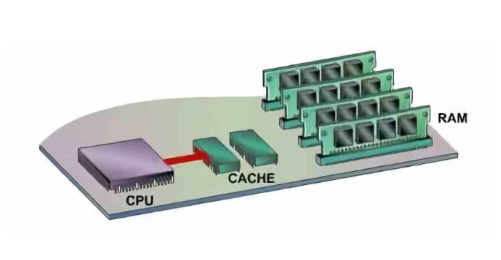
Memoria caché
Es una memoria estática (SRAM) de velocidad extrema ubicada físicamente de forma interna entre los núcleos de la CPU y la RAM principal. Su función es mitigar la brecha de velocidad que existe entre el procesador y la memoria del sistema. Basándose en los principios de localidad espacial y temporal, guarda copias de las instrucciones recurrentes para que el procesador acceda a ellas de manera instantánea sin generar tiempos muertos de espera, organizándose en niveles jerárquicos L1, L2 y L3.
1.4: Módulos de Entrada – Salida (E/S)
Son interfaces lógicas y electrónicas complejas que actúan como mediadores y traductores de señales. Son completamente necesarios debido a que los periféricos externos (teclados, monitores, discos externos) operan a velocidades, voltajes y formatos de datos extremadamente dispares a la lógica interna de alta velocidad de la CPU y la memoria.
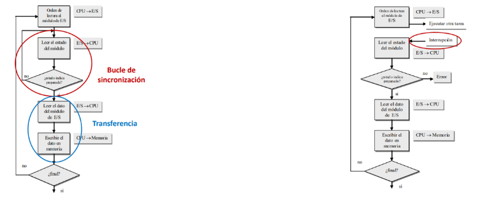
E/S programada
Es el método clásico más rudimentario. Cuando la CPU solicita una transferencia a un periférico, entra en un bucle cerrado de software consultando repetidamente un bit de estado del módulo (proceso denominado polling o sondeo). Mientras el dispositivo periférico responde, el procesador desperdicia millones de ciclos de cálculo útiles únicamente en preguntar de forma constante si el componente ya está listo.
E/S mediante interrupciones
Este método elimina la ineficiencia del sondeo. La CPU emite la orden de datos al módulo de E/S y continúa de inmediato ejecutando otras instrucciones del sistema. Cuando el periférico termina de recolectar el dato, el módulo envía una señal eléctrica a una patilla del procesador (Línea de Interrupción). Al recibirla, la CPU pausa de forma segura su estado actual, ejecuta un bloque de código especial para recuperar el dato (Rutina de Servicio de Interrupción) y regresa a su flujo original sin haber perdido tiempo de procesamiento.
1.5: Acceso directo a memoria (DMA)
El acceso directo a memoria o DMA (Direct Memory Access) es un mecanismo diseñado para transferencias de datos masivas (como un bloque de disco duro o paquetes de red rápidos). Utiliza un chip controlador de hardware dedicado que toma temporalmente el control de los buses del sistema. La CPU únicamente configura el DMA indicando el origen, destino en la RAM y tamaño del bloque; a partir de ahí, la transferencia ocurre directamente entre el periférico y la memoria sin que los bits pasen por la CPU. Al finalizar el bloque completo, el DMA envía una única interrupción de aviso, liberando casi al 100% el trabajo del procesador en transferencias pesadas.
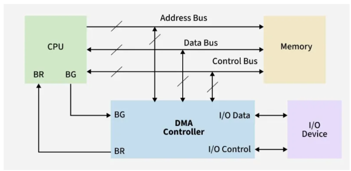
1.6: Buses
Los buses son canales conductores físicos compuestos por líneas paralelas de cobre impresas en la placa madre o silicio interno encargados de transferir flujos ordenados de información binaria en perfecta sincronía.
Tipos de buses
Se especializan según la naturaleza de los hilos de información:
Bus de datos: Es bidireccional y se encarga del transporte directo de los bits de información pura. Su ancho determina el rendimiento operativo básico.
Bus de direcciones: Es controlado únicamente por la CPU y transporta el destino físico de la celda de memoria a interactuar. Su ancho de bits determina el límite teórico de memoria RAM direccionable del sistema.
Bus de control: Canaliza señales eléctricas que coordinan los tiempos, habilitan los accesos a los dispositivos y transmiten comandos como peticiones de lectura o escritura.
Estructura
La estructura física la conforman las líneas de transmisión en placa, los slots o ranuras de expansión estandarizados y los controladores lógicos integrados que actúan como adaptadores de voltaje y puentes de conexión.
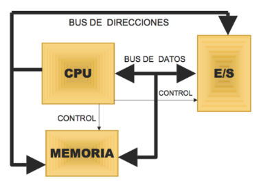
Jerarquía
Los sistemas modernos organizan sus buses de forma jerárquica para evitar que dispositivos lentos (como un teclado) generen cuellos de botella a dispositivos ultra rápidos (como la tarjeta de video). Dispone de un Bus Local del sistema que une la CPU con la RAM a velocidades extremas mediante el chipset central, un Bus de alta velocidad (como PCI-Express) para gráficas y almacenamiento NVMe, y un Bus de expansión (como USB o SATA) aislado para periféricos comunes.
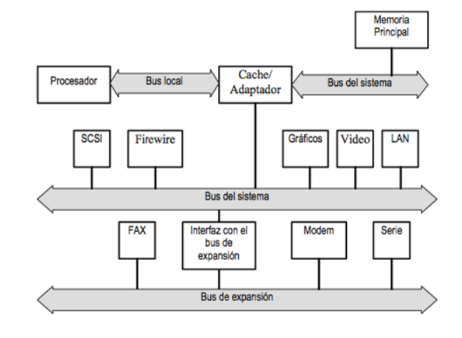
1.7: Interrupciones
Las interrupciones son señales críticas que detienen temporalmente la ejecución secuencial de la CPU para forzar la atención inmediata de un evento prioritario. Es el mecanismo electrónico fundamental que permite la multitarea real en sistemas operativos. Se clasifican en Interrupciones de Hardware Externas (asíncronas, enviadas por periféricos), Excepciones de Hardware Internas (provocadas por la CPU debido a errores del software en ejecución, como una división entre cero), e Interrupciones por Software (Traps), que son llamadas explícitas en el código de un programa para solicitar servicios directos al núcleo del sistema operativo de manera controlada.
UNIDAD 2
Estructura y funcionamiento del procesador
2.1: Organización del procesador
El procesador o CPU (Unidad Central de Procesamiento) es el componente principal y el motor operativo de una computadora; se encarga de ejecutar instrucciones, procesar datos crudos y coordinar el funcionamiento asíncrono de todo el sistema. Su organización interna está basada en el modelo de transferencia de registros, compuesto por diferentes unidades especializadas que trabajan de manera conjunta y paralela para realizar operaciones matemáticas y lógicas de manera eficiente, optimizando el uso de los ciclos de reloj del sistema.
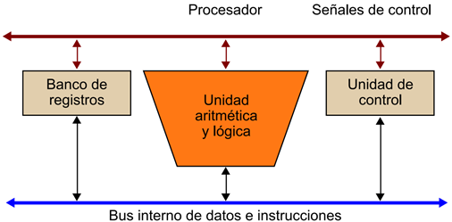
Entre los principales componentes que dictan la organización interna del procesador se encuentran la Unidad de Control (UC), que interpreta las instrucciones; la Unidad Aritmética Lógica (ALU), que realiza los cálculos físicos; los Registros, que actúan como almacenamiento de ultra alta velocidad; y los Buses Internos, que sirven como las autopistas de silicio para el intercambio de datos. Cada uno cumple funciones específicas y secuenciales relacionadas con el procesamiento, sincronización y transferencia de información a nivel de microarquitectura.
2.2: Estructura de registros
Los registros son pequeñas celdas de memoria de alta velocidad ubicadas directamente dentro del núcleo físico del procesador, construidas a base de circuitos de transistores flip-flop. Su función es almacenar temporalmente datos binarios, direcciones de memoria e instrucciones en ejecución que la CPU necesita utilizar de forma inmediata. Al estar integrados en el propio silicio, eliminan los tiempos de espera asociados al bus del sistema, permitiendo un acceso en un solo ciclo de reloj.
Registros visibles a usuario
Son aquellos registros que pueden ser manipulados, leídos o escritos directamente por los programadores de software (especialmente en lenguaje Ensamblador) y los compiladores a través del repertorio de instrucciones de la máquina. Se emplean para almacenar datos intermedios de operaciones, operandos aritméticos y direcciones de memoria base o de índice necesarias durante la ejecución de algoritmos y programas del usuario, subdividiéndose comúnmente en registros de datos y registros de direcciones.
Registros de control
Los registros de control son recursos internos no modificables de forma directa por el software de usuario común, sino que son utilizados exclusivamente por la unidad de control del procesador para supervisar, secuenciar y coordinar el funcionamiento interno de la CPU. Estos registros almacenan información crítica relacionada con la instrucción que se está ejecutando en ese instante, las direcciones físicas de las celdas de memoria RAM a consultar y el control de los estados de operación de las subunidades del procesador. Ejemplos de estos son el PC (Contador de Programa) y el IR (Registro de Instrucción).
Registros de estado
Los registros de estado, comúnmente conocidos como Registro de Banderas (Flags), contienen información lógica y condicional sobre el resultado directo de las últimas operaciones aritméticas o lógicas realizadas por la ALU. Guardan indicadores individuales de un solo bit (banderas) que muestran condiciones críticas del sistema, tales como resultados negativos (Sign Flag), resultados iguales a cero (Zero Flag), desbordamientos de capacidad (Overflow Flag), acarreos aritméticos (Carry Flag) o errores de ejecución, los cuales son indispensables para que el procesador pueda tomar decisiones y realizar saltos condicionales en el flujo del programa.
2.3: Ciclo de la instrucción
El ciclo de instrucción, también denominado ciclo de ejecución, es el proceso secuencial y cronológico que sigue la CPU para extraer, interpretar y ejecutar una instrucción binaria almacenada en la memoria principal del sistema. Este proceso se rige por las señales del reloj del sistema y se repite de forma cíclica e ininterrumpida miles de millones de veces por segundo mientras la computadora se encuentre encendida y operativa.
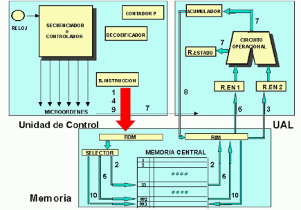
2.3.1: Ciclo Fetch – Decode – Execute
El ciclo clásico Fetch – Decode – Execute consta de tres etapas principales y obligatorias que segmentan el procesamiento de cada instrucción:
Fetch (Captación): El procesador consulta el registro Contador de Programa (PC) para obtener la dirección de la siguiente instrucción en la memoria principal, la copia a través del bus de datos y la almacena en el Registro de Instrucción (IR), incrementando el PC para apuntar a la siguiente celda.
Decode (Decodificación): La instrucción almacenada en el IR es analizada e interpretada por la matriz lógica de la Unidad de Control. Esta unidad descompone el código de operación (OpCode) para determinar qué tarea exacta se debe realizar y dónde se localizan los operandos necesarios.
Execute (Ejecución): La Unidad de Control activa las señales de hardware necesarias (como direccionar la ALU, mover datos entre registros o habilitar una lectura de memoria) para llevar a cabo la operación matemática, lógica o de transferencia requerida, almacenando el resultado final en el registro o celda correspondiente.
2.3.2: Segmentación
La segmentación de cauce o Pipeline es una técnica avanzada de diseño de hardware utilizada para maximizar el rendimiento y el rendimiento general (*throughput*) del procesador sin aumentar la frecuencia de reloj. Consiste en dividir el ciclo de instrucción en varias subetapas independientes y concurrentes. De este modo, el procesador puede comenzar a captar (*Fetch*) una nueva instrucción mientras la instrucción previa se encuentra en la etapa de decodificación (*Decode*) y la anterior a esa se está ejecutando (*Execute*), imitando una línea de ensamblaje industrial donde múltiples instrucciones avanzan en paralelo por diferentes fases del hardware.
2.3.3: Conjunto de instrucciones
El conjunto de instrucciones, conocido técnicamente como ISA (Instruction Set Architecture), representa la interfaz completa y el límite fronterizo entre el hardware del procesador y el software que se ejecuta en él. Es el grupo total de comandos binarios nativos abstractos que el procesador es físicamente capaz de comprender y ejecutar. Estas instrucciones incluyen operaciones aritméticas básicas, lógica booleana, control de flujo del programa (saltos y bucles) y transferencia de datos entre memoria y registros. Cada familia o arquitectura de procesador (como x86, ARM o RISC-V) posee su propio conjunto de instrucciones único y especializado.
2.4: Modos de direccionamiento
Los modos de direccionamiento son las diferentes reglas lógicas y mecanismos algorítmicos que utiliza el procesador dentro de su juego de instrucciones para determinar y calcular la dirección física de memoria de un operando o dato. Permiten dotar de flexibilidad a la programación en ensamblador al facilitar el uso de estructuras complejas como vectores, matrices y punteros.
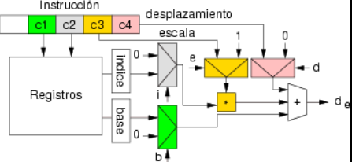
Algunos de los modos de direccionamiento fundamentales dentro de las arquitecturas de cómputo son:
Direccionamiento inmediato: El valor del dato u operando real se encuentra codificado directamente dentro del propio cuerpo de la instrucción, por lo que no requiere realizar ninguna consulta a la memoria RAM ni a los registros.
Direccionamiento directo: El campo de operando de la instrucción contiene de forma explícita la dirección de memoria exacta (la posición numérica de la celda) donde se encuentra almacenado el dato que la CPU debe leer o escribir.
Direccionamiento indirecto: El campo de la instrucción contiene una dirección de memoria que apunta a otra celda intermedia, la cual almacena la dirección física real donde se localiza el dato final, actuando como un mecanismo de punteros.
Direccionamiento por registro: Es similar al direccionamiento directo, pero el dato no reside en la memoria RAM, sino que se encuentra almacenado dentro de uno de los registros internos de la CPU, ofreciendo la velocidad de acceso más alta disponible.
2.5: Casos de estudio
Los casos de estudio dentro de la arquitectura de computadoras permiten analizar, comparar y evaluar el comportamiento técnico y el rendimiento real de diferentes microarquitecturas comerciales utilizadas en entornos de producción actuales. A través de estos análisis prácticos, se examinan variables de ingeniería crítica como la velocidad de reloj base y turbo, la cantidad de núcleos físicos e hilos lógicos, la jerarquía de memoria caché (L1, L2, L3), el consumo de potencia térmica de diseño (TDP) y la eficiencia de los conjuntos de instrucciones implementados bajo cargas de trabajo pesadas.
Algunos ejemplos estándar en la industria son los procesadores de la familia Intel Core (con su arquitectura híbrida de núcleos de rendimiento "P-Cores" y núcleos de eficiencia "E-Cores") y la línea AMD Ryzen (basada en chiplets modulares bajo la arquitectura "Zen"), ambos ampliamente estudiados por ser los referentes dominantes en computadoras personales, estaciones de trabajo y servidores modernos de alto rendimiento.
UNIDAD 3
Selección de componentes para ensamble de equipo de cómputo
3.1: Chipset
El chipset es el conjunto de circuitos integrados diseñados como el eje de comunicaciones de la tarjeta madre. Su función es actuar como el puente lógico y controlador de tráfico que coordina, regula y administra el flujo masivo de información bidireccional entre el procesador, los módulos de memoria principal, los buses de expansión de alta velocidad, las interfaces de almacenamiento permanente y los periféricos de entrada y salida, garantizando la sincronía y la estabilidad operacional del sistema completo.
3.1.1: Unidad Central de Procesamiento (CPU)
La CPU es el componente computacional primario encargado de interpretar y ejecutar secuencias de instrucciones binarias organizadas en programas. Es considerada el cerebro lógico de la computadora, dado que gobierna el comportamiento de los demás subsistemas de hardware y ejecuta las operaciones aritméticas complejas y las evaluaciones booleanas fundamentales que dan sustento dinámico al software.
3.1.2: Controlador del BUS
El controlador del bus es un módulo especializado encargado de gestionar el acceso, el arbitraje y la temporización de las transferencias de datos que ocurren a través de las líneas compartidas del sistema. Su tarea principal es evitar colisiones de datos cuando múltiples componentes (como la CPU, la tarjeta gráfica o la memoria RAM) intentan utilizar los canales de transmisión simultáneamente, asignando prioridades según el estado operativo.
3.1.3: Puertas de Entrada – Salida (E/S)
Las puertas de entrada y salida representan las interfaces físicas, electrónicas y de protocolo que permiten la conexión externa de periféricos al sistema informático. Actúan como adaptadores de señal que traducen los flujos de datos externos (provenientes de teclados, dispositivos USB, monitores o redes de datos) hacia los formatos lógicos y niveles de voltaje internos que el procesador y el chipset pueden interpretar.
3.1.4: Controlador de interrupciones
El controlador de interrupciones (conocido históricamente como PIC o APIC en arquitecturas modernas) es un dispositivo de hardware encargado de centralizar, priorizar y enmascarar las señales de interrupción (*IRQs*) emitidas asíncronamente por los periféricos. Su función es aliviar a la CPU de la gestión directa de estas señales, organizándolas en una fila ordenada por niveles de importancia crítica antes de notificar al procesador para su inmediata atención.
3.1.5: Controlador de Acceso Directo a Memoria (DMA)
El controlador DMA es un procesador de propósito específico que permite a los dispositivos periféricos de alta velocidad (como unidades de almacenamiento masivo o tarjetas de red) transferir bloques de datos directamente hacia o desde la memoria RAM. Al asumir el control temporal de los buses del sistema para estas transferencias masivas, evita que la CPU actúe como intermediaria bit a bit, reduciendo drásticamente la sobrecarga de trabajo del procesador principal.
3.1.6: Circuitos de temporización
Los circuitos de temporización, basados en osciladores de cristal de cuarzo y contadores lógicos, generan señales de onda cuadrada estables que actúan como el pulso o reloj del sistema (*System Clock*). Estas señales de sincronía son indispensables para pautar el inicio y fin de cada microoperación en el hardware, asegurando que los componentes internos ejecuten sus transiciones de estado en el momento preciso de manera ordenada.
3.1.7: Circuitos de control
Los circuitos de control son la lógica de hardware encargada de emitir comandos operativos específicos hacia los diferentes dispositivos y subunidades de la tarjeta madre. Supervisan de forma continua las líneas de estado del sistema, decodifican las peticiones del chipset y distribuyen las señales de lectura/escritura necesarias para la correcta administración y secuenciación del flujo general de datos.
3.1.8: Circuitos de video
Los circuitos de video procesan, calculan y generan las señales de color y sincronismo necesarias para proyectar imágenes en un monitor externo. Pueden residir de forma integrada dentro del propio encapsulado del procesador o del chipset (video integrado compartiendo memoria RAM), o estar implementados en un subsistema dedicado de alta potencia gráfica dotado de su propia memoria de video (VRAM).
3.2: Aplicaciones
El diseño microarquitectónico y la selección de componentes de un equipo de cómputo no son estáticos; se estructuran en función de los perfiles de carga de trabajo y las demandas de las aplicaciones de software que el usuario final ejecutará, balanceando factores de costo, velocidad de acceso y fiabilidad del hardware.
3.2.1: Entrada/Salida
Los dispositivos de entrada y salida rigen la interacción y digitalización en la frontera usuario-máquina. Los componentes de entrada (como escáneres industriales o ratones de alta precisión) transforman fenómenos mecánicos u ópticos en códigos binarios, mientras que los de salida (como monitores de alta resolución o impresoras térmicas) convierten los resultados lógicos de la CPU en formatos perceptibles o físicos para el operador.
3.2.2: Almacenamiento
Los dispositivos de almacenamiento resguardan los estados de información del sistema en jerarquías temporales o permanentes. El diseño moderno balancea tecnologías de acceso masivo de menor velocidad pero no volátiles (como discos duros mecánicos HDD y unidades de estado sólido SSD basadas en transistores NAND Flash) con la alta velocidad volátil de la RAM para optimizar la carga del sistema operativo.
3.2.3: Fuentes de alimentación
La fuente de alimentación actúa como el subsistema de conversión energética primaria de la computadora. Su rol es transformar la corriente alterna comercial (alta tensión e inestable) en múltiples líneas estables de corriente directa con voltajes de precisión (+3.3V, +5V, +12V) requeridos por la delicada electrónica de los chips semiconductores, implementando sistemas de protección contra sobretensiones.
3.3: Ambientes de servicio
Los sistemas de cómputo se adaptan físicamente y a nivel de firmware para responder con eficiencia a las normativas, condiciones térmicas y demandas operativas de los diversos nichos de servicio en los que operan.
3.3.1: Negocios
En los entornos corporativos y de negocios, las estaciones de trabajo se orientan a la ejecución robusta de tareas administrativas, hojas de cálculo complejas y software ERP. Las arquitecturas para este ambiente priorizan el soporte multitarea eficiente, la estabilidad del firmware a largo plazo, tecnologías de cifrado de datos por hardware (como chips TPM) y herramientas de gestión remota de TI.
3.3.2: Industria
Los ambientes industriales exigen computadoras con diseños de alta resistencia (*Embedded/Rugged PCs*) capaces de operar bajo condiciones extremas de vibración, polvo, humedad y rangos de temperatura ampliados. Se utilizan para el control de procesos automatizados en tiempo real y PLC; sus placas madre priorizan buses heredados de alta fiabilidad operacional (como puertos RS-232 o CAN bus) y fuentes de poder redundantes para garantizar una operación continua 24/7 sin fallos.
3.3.3: Comercio electrónico
La infraestructura para comercio electrónico descansa sobre arquitecturas de servidores de centros de datos y sistemas en la nube diseñados para alta disponibilidad y escalabilidad horizontal. Requieren subsistemas de red con anchos de banda extremos, arreglos de almacenamiento tolerantes a fallos (RAID), aceleración criptográfica por hardware para procesar transacciones TLS/SSL seguras de forma simultánea y redundancia total de componentes.
UNIDAD 4
Procesamiento paralelo
4.1: Aspectos básicos de la computación paralela
La computación paralela es una forma de cómputo en la que muchas instrucciones se ejecutan de manera simultánea en el tiempo. Se fundamenta en el principio físico de que los problemas grandes y complejos casi siempre pueden dividirse en subproblemas más pequeños e independientes, los cuales pueden resolverse al mismo tiempo empleando múltiples recursos de procesamiento físicos (como núcleos independientes o procesadores interconectados). Su meta primordial es romper la barrera del rendimiento secuencial, disminuyendo de forma exponencial los tiempos de cómputo.
Este paradigma es el estándar de ingeniería para la resolución de problemas de cálculo intensivo que saturan a un procesador clásico, tales como simulaciones de dinámicas de fluidos, modelos predictivos climatológicos, entrenamiento de redes neuronales profundas en inteligencia artificial, renderizado de gráficos tridimensionales y procesamiento distribuido de macrodatos (*Big Data*).
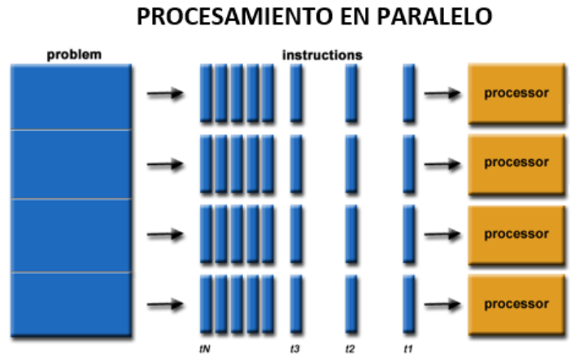
4.2: Tipos de computación paralela
El procesamiento paralelo se clasifica y diferencia estructuralmente según la organización interna de los flujos de control del procesador, el número de buses del sistema y el acoplamiento físico de la memoria con las unidades de ejecución.
4.2.1: Clasificación
La taxonomía más aceptada para los sistemas paralelos fue propuesta por Michael J. Flynn en 1966 (Taxonomía de Flynn), la cual organiza los sistemas según la multiplicidad de sus flujos de instrucciones y de datos:
SISD (Single Instruction, Single Data): Computador secuencial convencional de Von Neumann que ejecuta una única instrucción sobre un único flujo de datos por ciclo de reloj.
SIMD (Single Instruction, Multiple Data): Un único flujo de instrucciones de control es emitido de manera síncrona hacia múltiples unidades de procesamiento, donde cada una aplica la misma operación pero sobre datos distintos (característico de las GPUs modernas y operaciones vectoriales).
MISD (Multiple Instruction, Single Data): Múltiples procesadores independientes ejecutan instrucciones o algoritmos de control diferentes utilizando de forma simultánea un único flujo de datos de entrada común (utilizado en sistemas de alta tolerancia a fallos críticos, como la navegación aeroespacial).
MIMD (Multiple Instruction, Multiple Data): Múltiples procesadores autónomos ejecutan de manera asíncrona sus propios flujos de instrucciones operando sobre sus propios flujos de datos independientes (la base de las supercomputadoras y procesadores multinúcleo actuales).
4.2.2: Arquitectura de computadoras secuenciales
Las arquitecturas secuenciales puras operan bajo la estricta ejecución determinista de una sola instrucción a la vez, mapeando el flujo del código de forma lineal sobre un único procesador. Aunque representan el pilar histórico de los primeros ordenadores personales, las limitaciones del límite físico de escalabilidad de los transistores obligaron a estas arquitecturas a incorporar elementos de paralelismo interno implícito (como el pipeline y la ejecución superescalar).
4.2.3: Organización de direcciones de memoria
La organización de direcciones determina el espacio de direccionamiento lógico y el acceso físico que tienen los procesadores sobre la memoria. Define si el mapa de direcciones es único y global para todas las unidades de procesamiento del sistema (memoria lógicamente compartida) o si el espacio está segmentado de forma privada, obligando a los nodos a interactuar mediante el paso de mensajes a través de interfaces de red de baja latencia (memoria distribuida).
4.3: Sistemas de memoria compartida
En los sistemas de memoria compartida, todos los procesadores o núcleos físicos acceden de forma directa a un espacio de direccionamiento de memoria RAM común y global. Esto simplifica de manera notable la programación del software, ya que las variables y datos intermedios se comparten en tiempo real entre las diferentes tareas a través del bus del sistema o de una red de conmutación interna.
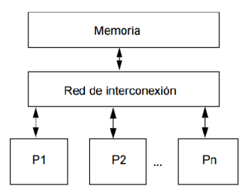
Multiprocesadores
Los multiprocesadores de memoria compartida se estructuran como un único sistema físico integrado que aloja múltiples CPUs. Un reto de ingeniería crítico en estos sistemas es la **Coherencia de Caché**: dado que cada procesador tiene su propia memoria caché rápida interna donde almacena copias de los datos de la RAM principal, el hardware debe implementar protocolos estrictos (como MESI o MOESI) para garantizar que si un procesador modifica una variable en su caché, los demás procesadores se enteren instantáneamente del cambio antes de leer datos desactualizados.
4.4: Sistemas de memoria distribuida
En los sistemas de memoria distribuida, el entorno físico carece de un espacio de memoria global común. Cada procesador o nodo de cómputo opera de forma completamente autónoma, disponiendo de su propia memoria local privada inaccesible para los demás. El intercambio de datos y la sincronización de las tareas paralelas se realiza mediante un paso explícito de mensajes por software a través de redes de interconexión dedicadas de alta velocidad.
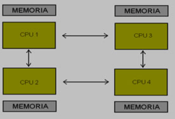
Multicomputadoras
Las multicomputadoras son arquitecturas paralelas paralelas construidas mediante la unión lógica de múltiples computadoras o nodos de procesamiento independientes conectados en red. Comúnmente denominados **Clusters de Cómputo**, estos sistemas coordinan el trabajo masivo dividiendo las grandes cargas computacionales entre sus nodos a través de APIs estandarizadas de paso de mensajes, como MPI (Message Passing Interface), ofreciendo una gran escalabilidad de costos.
4.4.1: Redes de interconexión estáticas
Las redes de interconexión estáticas son topologías de comunicación físicas donde los enlaces cableados entre los diferentes nodos de procesamiento o computadoras se establecen de forma fija y permanente durante el diseño del sistema. Dependiendo de los requerimientos de ancho de banda y costo, se estructuran en topologías específicas como lineal, anillo, malla bidimensional, toroide o hipercubo de n-dimensiones, determinando la latencia y la eficiencia del enrutamiento de datos distribuidos.
4.5: Casos para estudio
Los casos de estudio aplicados a la computación paralela permiten analizar las metodologías utilizadas por las corporaciones tecnológicas líderes para resolver los problemas de escala masiva en centros de datos modernos, nubes de cálculo e infraestructuras de supercomputación científica (como la lista Top500).
Actualmente, el mercado de hardware paralelo está liderado por los procesadores masivos de Intel y AMD (con arquitecturas de servidor de hasta 128 núcleos nativos), y de manera disruptiva por las arquitecturas de **NVIDIA** (a través de ecosistemas como CUDA), las cuales transforman miles de pequeños núcleos de procesamiento gráfico orientados al paralelismo SIMD en aceleradores computacionales indispensables para entrenar modelos complejos de Inteligencia Artificial Generativa y simulaciones numéricas avanzadas.
PDF del curso
Reporte práctica #1 descargar el PDF completo aquí .
Reporte práctica #2 descargar el PDF completo aquí .
Procesadores descargar el PDF completo aquí .
Reporte práctica #3 descargar el PDF completo aquí .
Gamas de equipos de cómputo descargar el PDF completo aquí .
Diseño de equipos descargar el PDF completo aquí .
Reporte práctica #4 descargar el PDF completo aquí .